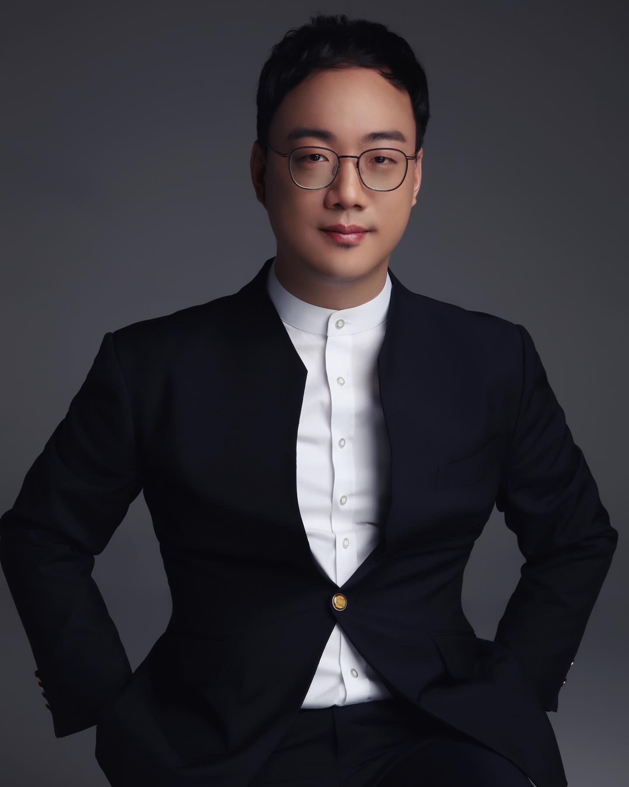

CONDUCTOR
Panju Kim
김판주
Music Director & Founder of Orchestra Lartife

Biography
Panju Kim earned a Magister der Künste degree in trumpet performance from the University of Music and Performing Arts Vienna (mdw) and completed graduate studies in conducting at Seoul National University.
He has worked with a wide range of orchestras and artistic projects in Korea and abroad, including Heart-Heart Orchestra, Seoul National University Philharmonic Orchestra, Gimpo Philharmonic Orchestra, Tokyo Sinfonia, The Symphonic Academy Orchestra of the Japanese German Philharmonic Society, and the Royal College Western Orchestra in Sri Lanka. He has also participated in conducting masterclasses with John Axelrod, Robert Rÿker, and Naoki Sugiyama in Romania and Japan.
He currently serves as Founder and Music Director of Orchestra Lartife, Principal Trumpet of the Yangju City Symphony Orchestra, Adjunct Professor at Sejong University, Visiting Professor at Suwon University, and faculty member at Dankook University. He has also taught at Sungshin Women’s University, Chung-Ang University, Kangwon National University, Hyupsung University, Hansei University, and Sangmyung University.
Through Orchestra Lartife, he develops performances and artistic projects that connect music with people, continually expanding the possibilities of classical music through collaboration with artists from Korea and abroad.
EDUCATION
- Magister der Künste in Trumpet Performance, University of Music and Performing Arts Vienna (mdw)
- M.M. in Conducting, Seoul National University
MASTERCLASSES
- The Bucharest Conducting Academy
Bucharest Symphony Orchestra · Instructor: John Axelrod - Tokyo Sinfonia International Conductor Workshops
Tokyo Sinfonia · Instructor: Robert Rÿker - Japanese German Philharmonic Society Conducting Masterclasses
The Symphonic Academy Orchestra of the Japanese German Philharmonic Society · Instructor: Naoki Sugiyama
SELECTED CONDUCTING ENGAGEMENTS
- Guest Conductor, Heart-Heart Orchestra
- Conductor, Seoul Community Arts Festival Orchestra Showcase
- Conductor, Seoul National University Philharmonic Orchestra Regular Concert
- Guest Conductor, Gimpo Philharmonic Orchestra
- Conductor, Variety Music Group Orchestra National Tour
- Guest Conductor, Royal College Western Orchestra 10th Anniversary Concert (Colombo, Sri Lanka)
- Conductor, Tokyo Sinfonia
- Conductor, The Symphonic Academy Orchestra of the Japanese German Philharmonic Society
AWARDS
- 3rd Prize, 2026 Kurt Redel Conducting Competition
CURRENT APPOINTMENTS
- Founder & Music Director, Orchestra Lartife
- Adjunct Professor, Sejong University
- Visiting Professor, Suwon University
- Faculty Member, Dankook University
- Principal Trumpet, Yangju City Symphony Orchestra
- Conductor, Happy Orchestra
- Conductor, Korea Classical Association Civic Orchestra
- Conductor, Mountain Cherry Academy Orchestra